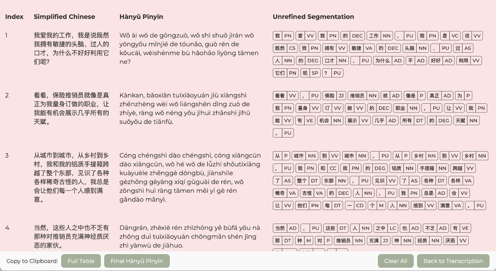
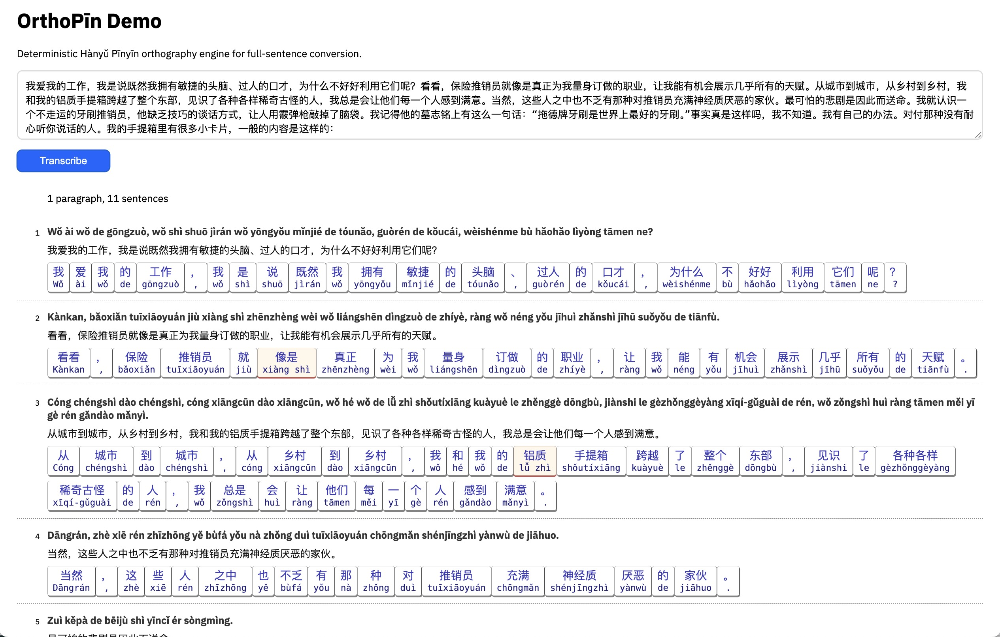
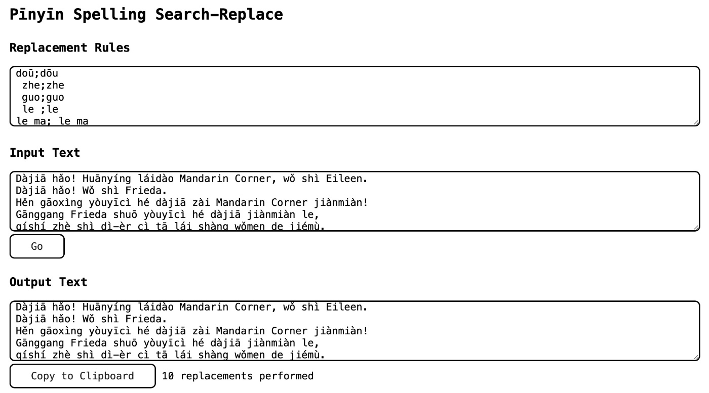
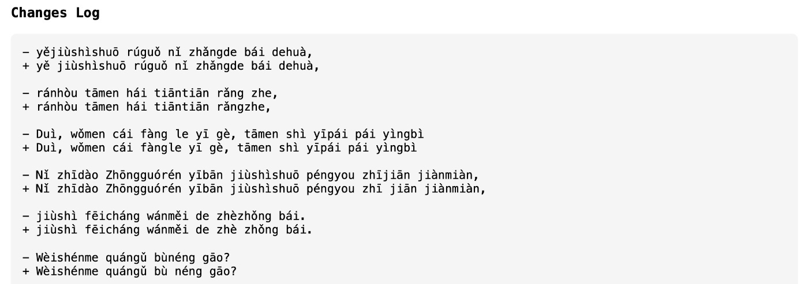

Deterministic Approaches to Standards-Compliant Hànyǔ Pīnyīn Transcription
Comparative Analysis of Architectures for GB/T 16159-2012-Compliant Hànyǔ Pīnyīn Orthography
Research Draft • 7. June 2026
Abstract: Most existing Hànyǔ Pīnyīn transcription systems are designed primarily for pronunciation lookup or input methods rather than strict compliance with the orthographic standard GB/T 16159-2012 (《汉语拼音正词法基本规则》). In practice, publication-grade Pīnyīn requires numerous lexical, grammatical, and formatting decisions that are not reliably handled by current tools.
Extensive experiments with literary prose and spoken-language materials showed that existing LLM-based and probabilistic approaches were unable to produce consistently reliable GB/T 16159-2012-compliant transcription for long-form texts. This led to the development of deterministic transcription workflows centered on lexical segmentation, explicit orthographic rules, and human-correctable intermediate representations. The workflows additionally produced several thousand manually corrected sentence-level transcriptions aligned with GB/T 16159-2012 conventions, potentially providing useful material for future benchmarking and evaluation.
The paper argues that publication-grade Pīnyīn transcription is best approached as a constrained orthographic engineering problem rather than a purely generative language task.
1. Background and Motivation
The official standard GB/T 16159-2012 defines orthographic rules essential for publication-grade Pīnyīn that can be used in, for example, subtitles, audiobooks, and digital publishing. Most existing tools, however, focus primarily on pronunciation or input methods.
This research originated from large-scale manual transcription projects, including the complete Pīnyīn conversion of a 倪匡 (Ní Kuāng) novel (≈414,000 characters), multi-year iterative normalization, and spoken-language podcast transcription. These efforts exposed persistent gaps in existing systems, particularly in lexical grouping, grammatical attachment, and consistent formatting.
The work highlighted the value of transparent, inspectable, and human-correctable transcription interfaces.
2. Current Limitations
2.1 Large Language Models (LLMs)
While LLMs can generate plausible Pīnyīn, they frequently fail to meet GB/T 16159-2012 requirements. Common issues include unwanted tone sandhi, inconsistent lexical segmentation, implicit paraphrasing, and stylistic drift in longer texts.
2.2 Traditional Libraries and Segmenters
Most dedicated Pīnyīn libraries are character-oriented rather than truly lexical. Although tools like Jieba and RakutenMA provide useful foundations, they require substantial additional deterministic post-processing to achieve publication-grade quality.
3. Architectural Pathways Explored
3.1 POS-Aware Segmentation with Interactive Deterministic Post-Processing
A primary prototype combined RakutenMA segmentation and POS tagging with deterministic orthographic rules and a fully interactive correction interface (token adjustment, Pīnyīn selection, and dictionary lookup). This system was used for the complete transcription of the 倪匡 (Ní Kuāng) novel, as well as many other, shorter texts.
Technologies: vanilla JavaScript/HTML/CSS, RakutenMA, CC-CEDICT.

Orthographic Transformation Pipeline
- Original token
- Candidate Pīnyīn readings
- Selected transcription
- POS metadata
- Parent/child references
Orthographic Rendering in the Post-Processing Pipeline
The rendering pipeline includes a series of ordered orthographic transformation passes:
-
separateMixedCharOrtho()— separates mixed-script boundaries between Hanzi and non-Hanzi character sequences. -
orthoTimecodes()— normalizes timestamp and timecode formatting early in the pipeline to prevent downstream segmentation interference. -
orthoZheGuo()— applies deterministic orthographic handling for Rule 6.1.2 regarding “着”, “了” and “过”. -
orthoLe()— applies post-selection orthographic normalization for sentence-final and grammatical 了 (le) usage. -
orthoBuLiao()— resolves orthographic treatment of 不 (bù) an 了 (le, liǎo)” constructions and associated lexical merges. -
orthoHardSelectPīnyīn()— performs explicit rule-priority transcription selection for unresolved or context-sensitive readings. -
orthoCapitalizeProperNouns()— applies deterministic capitalization rules for recognized proper nouns and named entities.
3.2 Segmentation with Deterministic Post-Processing
Another prototype employed Jieba-based segmentation followed by fully deterministic, non-interactive orthographic rendering. This entirely automated workflow, which omitted human correction and review stages, appears potentially suitable for real-time or on-the-fly transcription scenarios. Preliminary experiments suggest that publication-grade output may be achievable within such an architecture, although doing so would likely require substantial additional engineering effort.
Technologies: vanilla JavaScript/HTML/CSS, Jieba-JS, Pinyin-Pro, CC-CEDICT.

3.3 Search-Replace Repair of Existing Pīnyīn
A third pathway focused on rule-based normalization of podcast transcripts using search-and-replace patterns. Such transcripts might have been produced by Google translate, manual transcription, LLMs, or specialised tools. This lightweight pipeline effectively corrected recurring orthographic issues.


doū;dōu
zhe;zhe
guo;guo
le ;le
le ma; le ma
le ba; le ba
le ne; le ne
le ya; le ya
le |; le |
zhījiān;zhī jiān
zhīhòu;zhī hòu
zhīqián;zhī qián
zàiyīqǐ;zài yīqǐ
shénmeshíhou;shénme shíhou
yějiùshì;yě jiùshì
gǎnxìngqù;gǎn xìngqù
yǒuméiyǒu;yǒu méiyǒu
nàzhǒng;nà zhǒng
zhèzhǒng;zhè zhǒng
yīzhǒng;yī zhǒng
Yīzhǒng;Yī zhǒng
4. Limitations and Future Work
This study is exploratory and relies primarily on qualitative evaluation of literary prose and spoken transcripts. It lacks large-scale quantitative benchmarks and formal inter-annotator measures.
Future work should include standardized GB/T 16159-2012 benchmark corpora and systematic comparisons between deterministic and probabilistic systems.
Conclusion
Standards-compliant Hànyǔ Pīnyīn transcription remains underdeveloped. Publication-grade results require reliable lexical, grammatical, and orthographic modeling beyond simple phonological conversion.
Deterministic architectures with rich intermediate representations and human-correctable workflows currently offer the strongest practical path.
The workflows developed during this study additionally produced several thousand manually corrected sentence-level transcriptions aligned with GB/T 16159-2012 conventions. Although limited in scope, such carefully verified orthographic reference material may provide a useful foundation for future benchmarking, regression testing, and reproducible standards-compliant Pīnyīn generation.